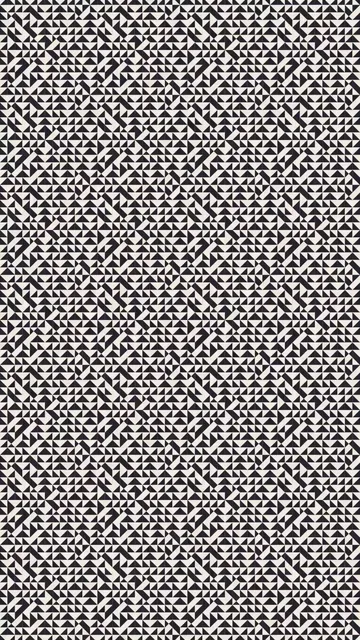
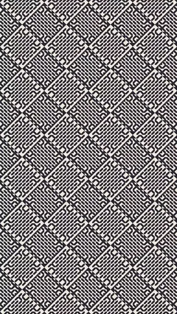
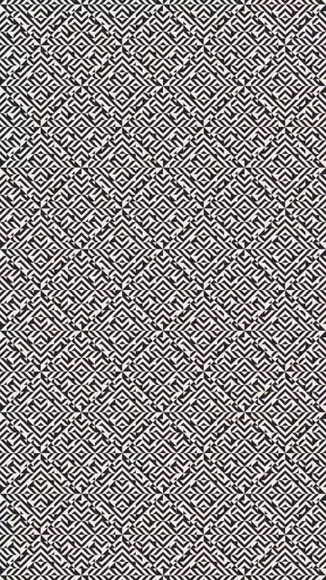
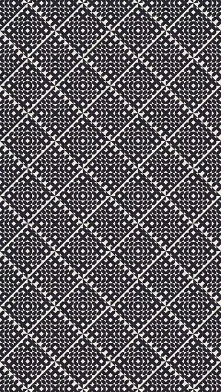
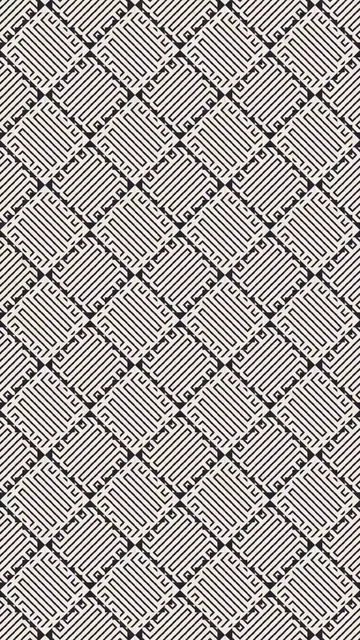

Kollektion B2D

Andere Sprachen: Français · English · Español · ไทย · 简体中文 · Русский · Português · हिन्दी · Italiano · 日本語
Gruppe 3 von 6 · 6 Animationen
Dieselben Bandfamilien, diagonal gelegt. Vor einem Klick wird nichts geladen, und es läuft immer nur eine Animation. Sie können jede Animation mit anderer Geschwindigkeit oder in anderen Farben in der Vorschau ansehen.





